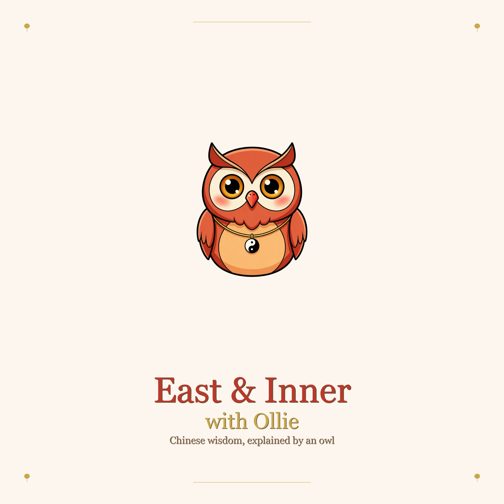

Classical Chinese medicine, translated for the modern ear. Hosted by Ollie.
The biggest mistranslation in wellness culture: Yin and Yang are NOT good and evil. The seesaw, the three rules, and why you should stop driving nails through your internal balance.